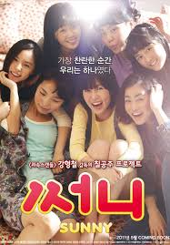

써니
- 감독 강형철
- 개봉년도 2011
- 상영시간 2시간
- 15세 이상 관람가
- 민효린 / 김보미 / 김민영 / 남보라
줄거리2011년. 잘나가는 사업가 남편과 고등학생 딸을 둔 주부 임나미. 남부러울 것 하나 없는 화려한 인생이지만 그녀는 자신의 삶에 2%의 무언가가 부족하다고 생각했다. 그러던 어느 날, 친정 어머니 문병차 병원에 들렀다가 '하춘화' 라는 이름이 새겨진 병실을 발견했다. 병실에 입원한 춘화는 바로 나미의 고등학교 시절 절친한 친구. 학창시절만 해도 대장 노릇을 톡톡히 하던 그녀였지만 성인이 된 지금은 폐암 말기로 길어야 2개월밖에 못 사는 상황이었다. 춘화는 세상을 떠나기 전, 흩어진 친구들을 다시 만나는 게 소원이라고 했고 그녀의 소원대로 흥신소를 동원해 연락이 끊긴 친구들을 찾아다니는 사이 까맣게 잊고 있던 25년 전의 과거를 떠올린다.